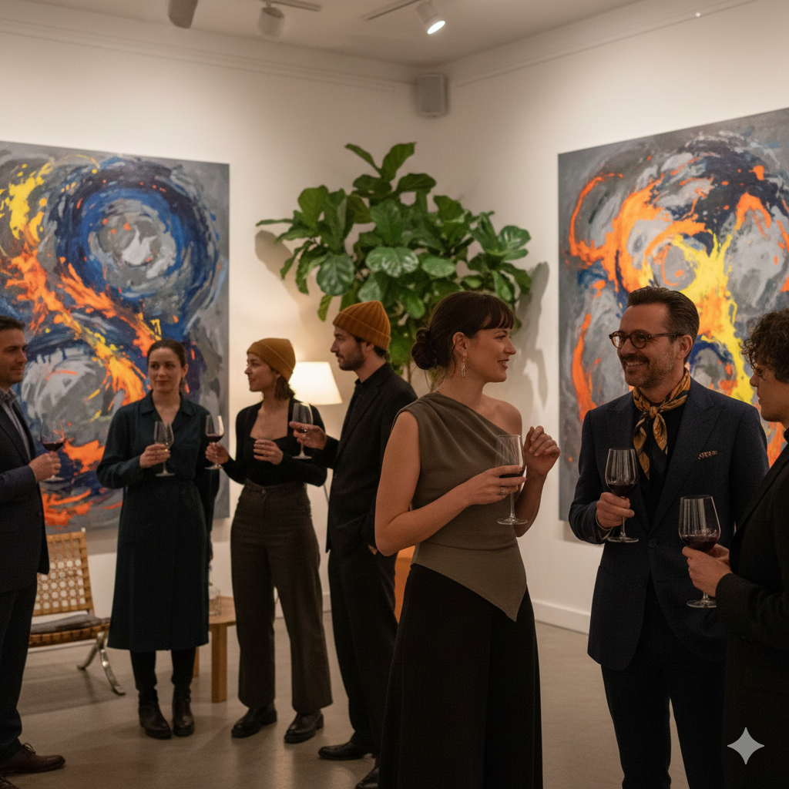

Darkham en movimiento
Del 2 de febrero al 24 de mayo de 2026.
Nodo Basquiat es un espacio dedicado al arte contemporáneo, la moda y el intercambio cultural.
Del 2 de febrero al 24 de mayo de 2026.

Del 17 de noviembre de 2025 al 1 de marzo de 2026.

Del 2 de diciembre de 2025 al 11 de mayo de 2026.

La obra es el inicio; el entorno es el lenguaje. En Nodo, creemos que la profundidad de una pieza se mide por la conversación que genera. Un espacio diseñado para que el arte suceda entre personas que ven el mundo con tu misma intensidad.
Agenda tu visitaEn Nodo Basquiat, el arte es el catalizador de algo más grande. Entendemos cada exhibición como una experiencia compartida: el eco de un vinilo de fondo, una copa de vino que abre el diálogo y la coincidencia de quienes buscan lo nuevo fuera de los circuitos tradicionales. No somos solo una parada en el mapa cultural; somos el radar de la escena emergente, fusionando la pausa de una galería con la energía vibrante de un punto de encuentro social.